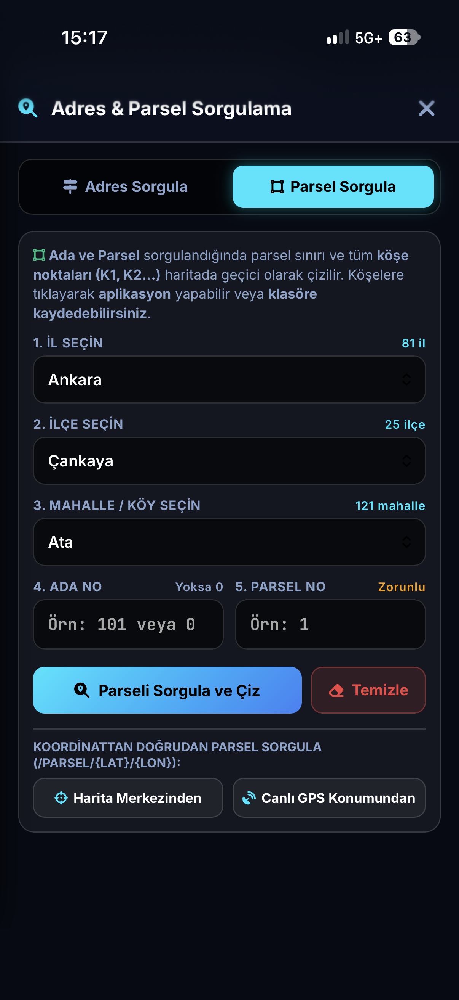

Makale Başlığı
Bu rehberdeki işlemleri sahada hemen deneyin!
Tüm TKGM parsellerini, MAKS sınırlarını ve canlı aplikasyonu telefonunuzda açın.
AZİMUT Pro; harita, inşaat, orman ve kadastro mühendisleri ile arazi sahipleri için geliştirilmiş yeni nesil jeodezik el terminalidir. Anlık ITRF96 / ED50 dönüşümü yapın, TKGM parsellerini ve MAKS adres/mahalle sınırlarını haritada çizdirip köşe noktalarına sesli aplikasyon gerçekleştirin.
TKGM kendi sitesinde bile parselleri tek tek verirken, AZİMUT Pro ile tüm parselleri tek ekranda görün; parsel sorgulayıp köşe noktalarını projenize aktararak aplikasyon yapın.
Mekânsal Adres Kayıt Sistemi (MAKS) verileri üzerinden mahalle idari sınırlarını, cadde/sokakları ve adres verilerini sorgulayıp harita üzerinde anında çizdirin.

Standart GPS programları sadece bulunduğunuz noktayı gösterirken, AZİMUT Pro kadastro ve adres veritabanlarını doğrudan cebinize getirir.
TKGM'nin kendi resmi sorgu sayfasında bile sadece tıkladığınız tek bir parseli görebilirken, AZİMUT Pro ile bulunduğunuz bölgedeki tüm kadastro parsellerini tek bir harita ekranında toplu olarak görürsünüz.
Belediyeler, numarataj ekipleri, altyapı mühendisleri ve saha uzmanları için Mekânsal Adres Kayıt Sistemi (MAKS) verileri doğrudan harita motoruna entegre edilmiştir.
Arazide ek bir el terminaline ihtiyaç duymadan tüm ölçüm, hesap ve raporlama işlerinizi tamamlayın.
Bulunduğunuz boylama göre Dilim Orta Meridyenini (DOM 27° - 45°) otomatik algılar veya manuel dilim kilitlemeyle Sağa (Y) ve Yukarı (X) koordinat üretir.
Hedef noktaya veya parsel köşesine kaç santimetre kaldığını pusula yönlendirmesi, sesli bip frekansı ve titreşimle adım adım tarif eder.
Anlık GPS sapmalarını sönümlemek için 5, 10 veya 20 epok boyunca ağırlıklı ortalama alır ve Karesel Ortalama Hata (RMS) değerini hesaplar.
Projelerinizi tek dokunuşla .NCN, .DXF, .KML, .CSV ve .GEOJSON formatlarında dışa aktarır veya ofisten gelen CAD dosyalarını haritada açar.
Harita üzerinden veya parsel seçerek kapalı alan (m², dönüm, hektar) ve çevre uzunluğu hesaplar; hakediş ve ön etütleri saniyeler içinde bitirir.
Arazide aldığınız noktaları, parsel köşelerini ve koordinat özet cetvelini tek tıkla kurumsal A4 PDF raporuna dönüştürüp paylaşmanızı sağlar.
Güneş altında yüksek okunabilirlik sunan arayüzümüzü inceleyin. Büyütmek için ekranlara dokunabilirsiniz.
Kategorilere ayrılmış güncel mühendislik yazılarımızı inceleyin veya arama kutusundan konunuzu filtreleyin.